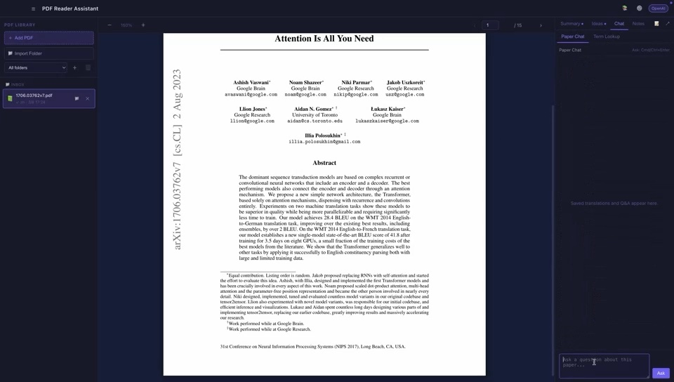

Paper Reader
Paper Reader combines PDF import, library folders, structured summaries, research ideas, quick translation, term lookup, paper chat, annotation workflows, vocabulary, Markdown notes, and configurable local storage.
Other projects
An AI-assisted desktop reader for research papers, designed around grounded paper understanding, task-specific AI workflows, and user-controlled local data.

Project overview
Paper Reader combines PDF import, library folders, structured summaries, research ideas, quick translation, term lookup, paper chat, annotation workflows, vocabulary, Markdown notes, and configurable local storage.
Technical contribution